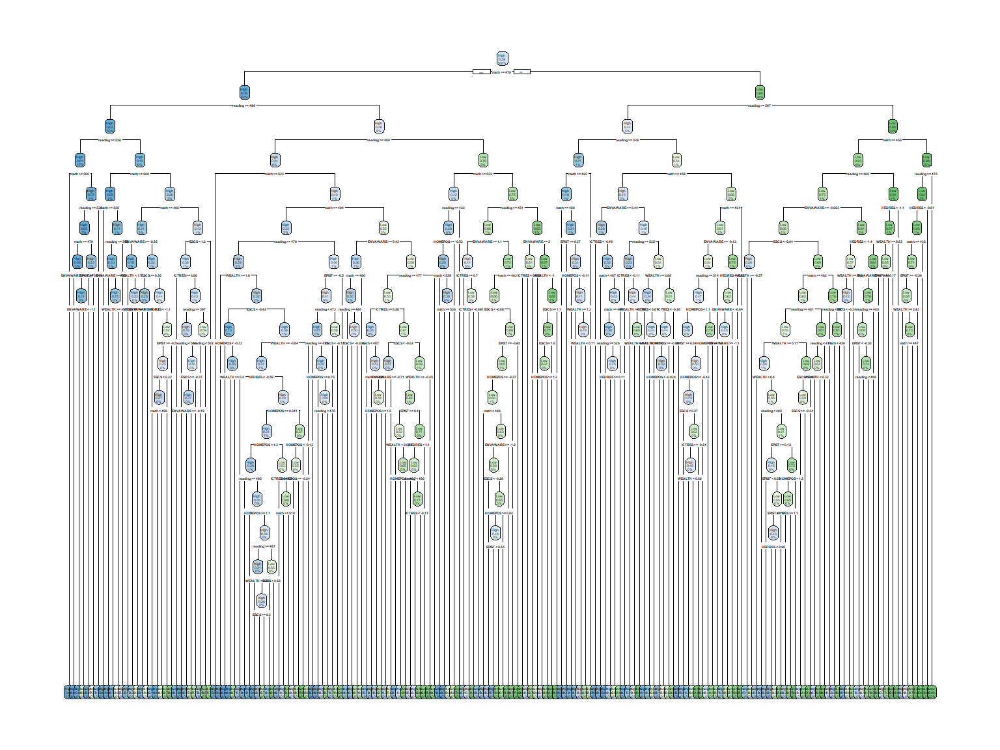
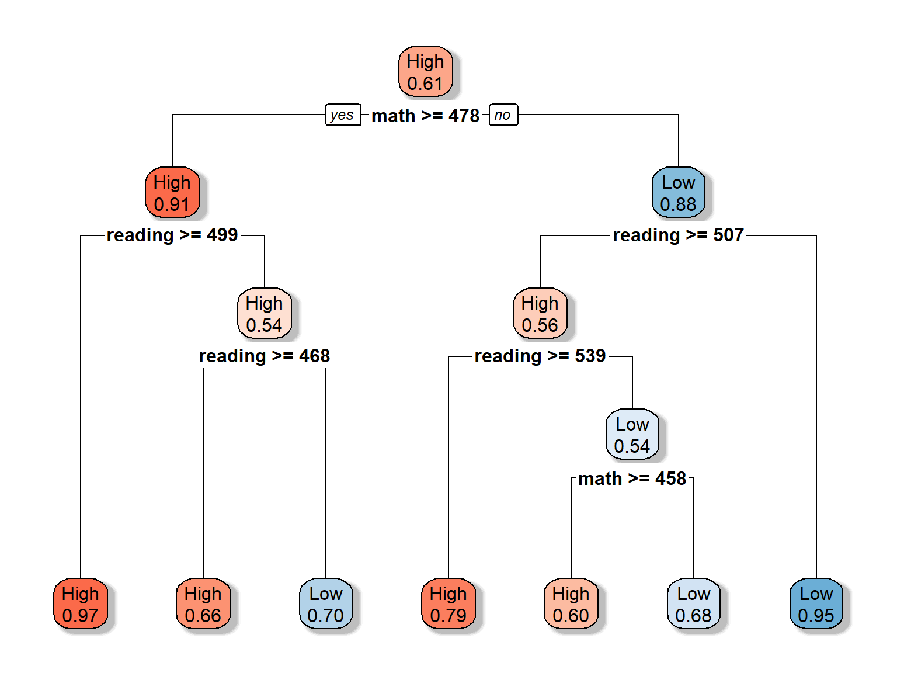
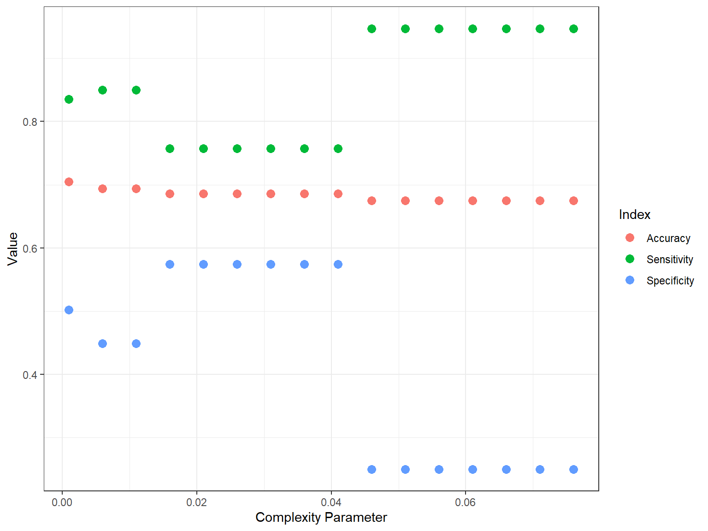
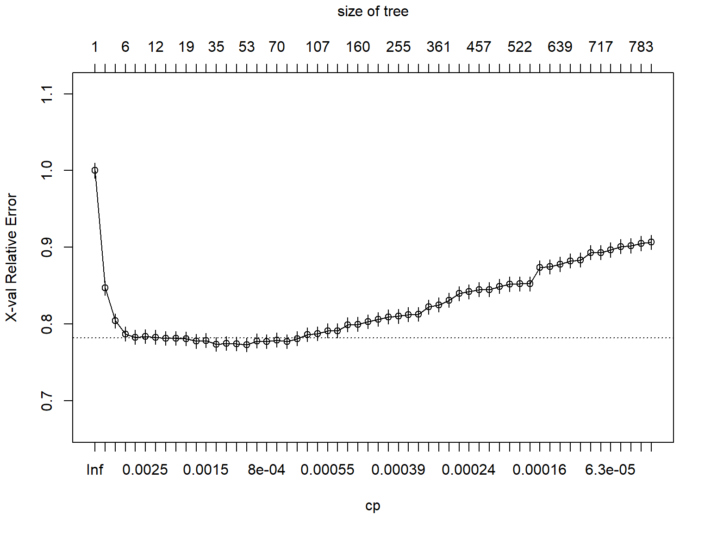
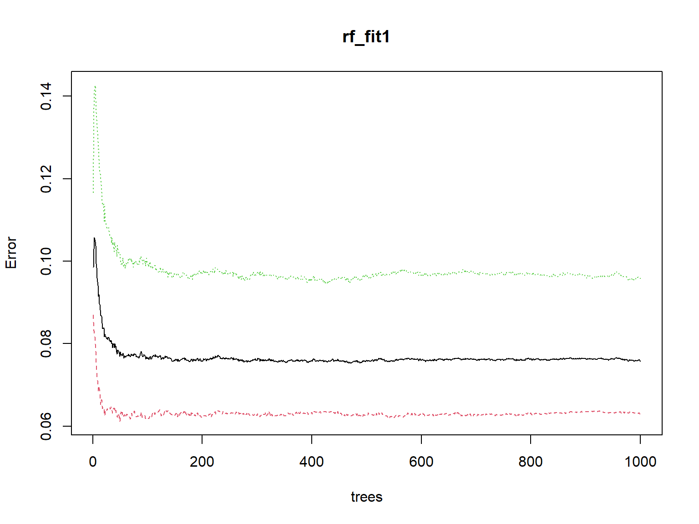
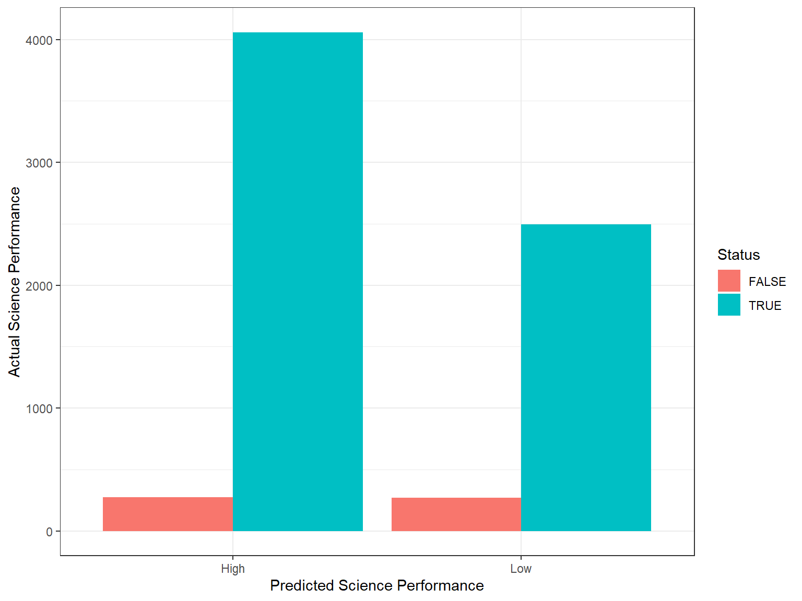

7 Supervised Machine Learning - Part I
7.1 Decision Trees
Decision trees (also known as classification and regression trees – CART) are an important type of algorithm for predictive modeling and machine learning. In general, the CART approach relies on stratifying or segmenting the prediction space into a number of simple regions. In order to make regression-based or classification-based predictions, we use the mean or the mode of the training observations in the region to which they belong.
A typical layout of a decision tree model looks like a binary tree. The tree has a root node that represents the starting point of the prediction. There are also decision nodes where we split the data into a smaller subset and leaf nodes where we make a decision. Each node represents a single input variable (i.e., predictor) and a split point on that variable. The leaf nodes of the tree contain an output variable (i.e., dependent variable) for which we make a prediction. Predictions are made by walking the splits of the tree until arriving at a leaf node and output the class value at that leaf node. Figure 7.1 shows an example of a decision tree model in the context of a binary dependent variable (accepting or not accepting a new job offer).

Figure 7.1: An example of decision tree approach
Although decision trees are not highly competitive with the advanced supervised learning approaches, they are still quite popular in ML applications because they:
- are fast to learn and very fast for making predictions.
- are often accurate for a broad range of problems.
- do not require any special preparation for the data.
- are highly interpretable compared to more complex ML methods (e.g., neural networks).
- are very easy to explain to people as the logic of decision trees closely mirrors human decision-making.
- can be displayed graphically, and thus are easily interpreted even by a non-expert.
In a decision tree model, either categorical and continuous variables can be used as the outcome variable depending on whether we want classification trees (categorical outcomes) or regression trees (continuous outcomes). Decision trees are particularly useful when predictors interact well with the outcome variable (and with each other).
7.1.1 Regression trees
In regression trees, the following two steps will allow us to create a decision tree model:
- We divide the prediction space (with several predictors) into distinct and non-overlapping regions, using a top-down, greedy approach – which is also known as recursive binary splitting. We begin splitting at the top of the tree and then go down by successively splitting the prediction space into two new branches. This step is completed by dividing the prediction space into high-dimensional rectangles and minimizing the following equation:
\[ RSS=\sum_{i: x_i \in R_1(j,s)}(y_i-\hat{y}_{R_1})^2 + \sum_{i: x_i \in R_2(j,s)}(y_i-\hat{y}_{R_2})^2 \]
where \(RSS\) is the residual sum of squares, \(y_i\) is the observed predicted variable for the observations \(i=(1,2,3, \dots, N)\) in the training data, \(j\) is the index for the \(j^{th}\) split, \(s\) is the cutpoint for a given predictor \(X_i\), \(\hat{y}_{R_1}\) is the mean response for the observations in the \(R_1(j,s)\) region of the training data and \(\hat{y}_{R_2}\) is the mean response for the observations in the \(R_2(j,s)\) region of the training data.
- Once all the regions \(R_1, \dots, R_J\) have been created, we predict the response for a given observation using the mean of the observations in the region of the training data to which that observation belongs.
7.1.2 Classification trees
A classification tree is very similar to a regression tree, except that the decision tree predicts a qualitative (i.e., categorical) variable rather than a quantitative (i.e., continuous and numerical) variable. The procedure for splitting the data in multiple branches is the same as the one we described for the regression tree above. The only difference is that instead of using the mean of the observations in the region of the training data, we assume that each observation belongs to the mode class (i.e., most commonly occurring class) of the observations in the region of the training data. Also, rather than minimizing \(RSS\), we try to minimize the classification error rate, which is the fraction of the training observations in a given region that do not belong to the most common class:
\[ E = 1 - max_k(\hat{p}_{mk}) \]
where \(\hat{p}_{mk}\) is the proportion of training observations in the \(m^{th}\) region that are from the \(k^{th}\) class. However, only classification error is NOT good enough to split decision trees. Therefore, there are two other indices for the same purpose:
- The Gini index:
\[ G = \sum_{k=1}^{K}\hat{p}_{mk}(1-\hat{p}_{mk}) \]
where \(K\) represents the number of classes. This is essentially a measure of total variance across the \(K\) classes. A small Gini index indicates that a node contains predominantly observations from a single class.
- Entropy:
\[ Entropy = -\sum_{k=1}^{K}\hat{p}_{mk}\text{log}\hat{p}_{mk} \]
Like the Gini index, the entropy will also take on a small value if the \(m^{th}\) node is pure.
When building a classification tree, either the Gini index or the entropy is typically used to evaluate the quality of a particular split, as they are more sensitive to the changes in the splits than the classification error rate. Typically, the Gini index is better for minimizing misclassification, while the Entropy is better for exploratory analysis.
7.1.3 Pruning decision trees
Sometimes decision trees end up having many branches and nodes, yielding a model that overfits the training data and poorly fits the validation or test data. To eliminate this overfitting problem, we may prefer to have a smaller and more interpretable tree with fewer splits at the cost of a little bias. One strategy to achieve this is to grow a very large tree and then prune it back in order to obtain a subtree.
Given a subtree, we can estimate its error in the test or validation data. However, estimating the error for every possible subtree would be computationally too expensive. A more feasible way is to use cost complexity pruning by getting a sequence of trees indexed by a nonnegative tuning parameter \(\alpha\) – which also known as the complexity parameter (cp). The cp parameter controls a trade-off between the subtree’s complexity and its fit to the training data. As the cp parameter increases from zero, branches in the decision tree get pruned in a nested and predictable fashion. To determine the ideal value for the cp parameter, we can try different values of cp in a validation set or use cross-validation (e.g., K-fold approach). By checking the error (using either RSS, or Gini index, or Entropy depending on the prediction problem) for different sizes of decision trees, we can determine the ideal point to prune the tree.
7.2 Decision trees in R
In the following example, we will build a classification tree model, using the science scores from PISA 2015. Using a set of predictors in the pisa dataset, we will predict whether students are above or below the mean scale score for science. The average science score in PISA 2015 was 493 across all participating countries (see PISA 2015 Results in Focus for more details). Using this score as a cut-off value, we will first create a binary variable called science_perf where science_perf= High if a student’s science score is equal or larger than 493; otherwise science_perf= Low.
pisa <- pisa[, science_perf := as.factor(ifelse(science >= 493, "High", "Low"))]In addition, we will subset the students from the United States and Canada and choose some variables (rather than the entire set of variables) to make our example relatively simple and manageable in terms of time. We will use the following variables in our model:
| Label | Description |
|---|---|
| WEALTH | Family wealth (WLE) |
| HEDRES | Home educational resources (WLE) |
| ENVAWARE | Environmental Awareness (WLE) |
| ICTRES | ICT Resources (WLE) |
| EPIST | Epistemological beliefs (WLE) |
| HOMEPOS | Home possessions (WLE) |
| ESCS | Index of economic, social and cultural status (WLE) |
| reading | Students’ reading score in PISA 2015 |
| math | Students’ math score in PISA 2015 |
We call this new dataset pisa_small.
pisa_small <- subset(pisa, CNT %in% c("Canada", "United States"),
select = c(science_perf, WEALTH, HEDRES, ENVAWARE, ICTRES,
EPIST, HOMEPOS, ESCS, reading, math))Before we begin the analysis, we need to install and load all the required packages.
decision_packages <- c("caret", "rpart", "rpart.plot", "randomForest", "modelr")
install.packages(decision_packages)
library("caret")
library("rpart")
library("rpart.plot")
library("randomForest")
library("modelr")
# Already installed packages that we will use
library("data.table")
library("dplyr")
library("ggplot2")Next, we will split our dataset into a training dataset and a test dataset. We will train the decision tree on the training data and check its accuracy using the test data. In order to replicate the results later on, we need to set the seed – which will allow us to fix the randomization. Next, we remove the missing cases, save it as a new dataset, and then use createDataPartition() from the caret package to create an index to split the dataset as 70% to 30% using p = 0.7.
# Set the seed before splitting the data
set.seed(442019)
# We need to remove missing cases
pisa_nm <- na.omit(pisa_small)
# Split the data into training and test
index <- createDataPartition(pisa_nm$science_perf, p = 0.7, list = FALSE)
train_dat <- pisa_nm[index, ]
test_dat <- pisa_nm[-index, ]
nrow(train_dat)## [1] 16561nrow(test_dat)## [1] 7097Alternatively, we could simply create the index using random number generation with sample.int().
n <- nrow(pisa_nm)
index <- sample.int(n, size = round(0.7 * n))To build a decision tree model, we will use the rpart function from the rpart package. In the function, there are several elements:
formula = science_perf ~ .defines the dependent variable (i.e., science_perf) and the predictors (and~is the separator). Because we usescience_perf ~ ., we use all variables in the dataset (except for science_perf) as our predictors. We could also write the same formula asscience_perf ~ math + reading + ESCS + ... + WEALTHby specifying each variable individually.data = train_datdefines the dataset we are using for the analysis.method = "class"defines what type of decision tree we are building.method = "class"defines a classification tree andmethod = "anova"defines a regression tree.controlis a list of control (i.e., tuning) elements for the decision tree algorithm.minsplitdefines the minimum number of observations that must exist in a node (default = 20);cpis the complexity parameter to prune the subtrees that don’t improve the model fit (default = 0.01, ifcp= 0, then no pruning);xvalis the number of cross-validations (default = 10, ifxval= 0, then no cross validation).parmsis a list of optional parameters for the splitting function.anovasplitting (i.e., regression trees) has no parameters. Forclasssplitting (i.e., classification tree), the most important option is the split index – which is either"gini"for the Gini index or"information"for the Entropy index. Splitting based oninformationcan be slightly slower compared to the Gini index (see the vignette for more information).
We will start building our decision tree model df_fit1 (standing for decision tree fit for model 1) with no pruning (i.e., cp = 0) and no cross-validation as we have a test dataset already (i.e., xval = 0). We will use the Gini index for the splitting.
dt_fit1 <- rpart(formula = science_perf ~ .,
data = train_dat,
method = "class",
control = rpart.control(minsplit = 20,
cp = 0,
xval = 0),
parms = list(split = "gini"))The estimated model is very likely to have too many nodes because we set cp = 0. Due to having many nodes, first we will examine the results graphically, before we attempt to print the output. Although the rpart package can draw decision tree plots, they are very basic. Therefore, we will use the rpart.plot function from the rpart.plot package to draw a nicer decision tree plot. Let’s see the results graphically using the default settings of the rpart.plot function.
rpart.plot(dt_fit1)
How does the model look like? It is NOT very interpretable, isn’t it? We definitely need to prune the trees; otherwise the model yields a very complex model with many nodes – which is very likely to overfit the data. In the following model, we use cp = 0.005. Remember that as we increase cp, the pruning for the model will also increase. The higher the cp value, the shorter the trees with possibly fewer predictors.
dt_fit2 <- rpart(formula = science_perf ~ .,
data = train_dat,
method = "class",
control = rpart.control(minsplit = 20,
cp = 0.005,
xval = 0),
parms = list(split = "gini"))
rpart.plot(dt_fit2)We could also estimate the same model with the Entropy as the split criterion, split = "information", and the results would be similar (not necessarily the tree itself, but its classification performance).
dt_fit2 <- rpart(formula = science_perf ~ .,
data = train_dat,
method = "class",
control = rpart.control(minsplit = 20,
cp = 0.005,
xval = 0),
parms = list(split = "information"))Now our model is less complex compared compared to the previous model. In the above decision tree plot, each node shows:
- the predicted class (High or low)
- the predicted probability of the second class (i.e., “Low”)
- the percentage of observations in the node
Let’s play with the colors to make the trees even more distinct. Also, we will adjust which values should be shown in the nodes, using extra = 8 (see other possible options HERE). Each node in the new plot shows:
- the predicted class (High or low)
- the predicted probability of the fitted class
rpart.plot(dt_fit2, extra = 8, box.palette = "RdBu", shadow.col = "gray")
An alternative way to prune the model is to use the prune() function from the rpart package. In the following example, we will use our initial complex model dt_fit1 and prune it.
dt_fit1_prune <- prune(dt_fit1, cp = 0.005)
rpart.plot(dt_fit1_prune, extra = 8, box.palette = "RdBu", shadow.col = "gray")which would yield the same model that we estimated. Now let’s print the output of our model using printcp():
printcp(dt_fit2)##
## Classification tree:
## rpart(formula = science_perf ~ ., data = train_dat, method = "class",
## parms = list(split = "gini"), control = rpart.control(minsplit = 20,
## cp = 0.005, xval = 0))
##
## Variables actually used in tree construction:
## [1] math reading
##
## Root node error: 6461/16561 = 0.39013
##
## n= 16561
##
## CP nsplit rel error
## 1 0.7461693 0 1.00000
## 2 0.0153227 1 0.25383
## 3 0.0147036 3 0.22319
## 4 0.0080483 4 0.20848
## 5 0.0050000 6 0.19239In the output, CP refers to the complexity parameter, nsplit is the number of splits in the decision tree based on the complexity parameter, and rel error is the relative error (i.e., \(1 - R^2\)) of the solution. This is the error for predictions of the data that were used to estimate the model. The section of Variables actually used in tree construction shows which variables have been used in the final model. In our example, only math and reading have been used. What happened to the other variables?
In addition to printcp(), we can use summary() to print out more detailed results with all splits.
summary(dt_fit2)We don’t print the entire summary output here. Instead, we want to focus on a specific section in the output:
Variable importance
math reading ENVAWARE ESCS EPIST HOMEPOS
46 37 5 4 4 4 Similarly, varImp() from the caret package also gives us a similar output:
varImp(dt_fit2)## Overall
## ENVAWARE 582.079065
## EPIST 791.498637
## ESCS 427.818610
## HEDRES 5.287639
## HOMEPOS 17.914110
## math 5529.901785
## reading 5752.549285
## WEALTH 7.572725
## ICTRES 0.000000Both of these show the importance of the variables for our estimated decision tree model. The larger the values are, the more crucial they are for the model. In our example, math and reading seem to be highly important for the decision tree model, whereas ICTRES is the least important variable. The variables that were not very important for the model are those that were not included in the final model. These variables are possibly have very low correlations with our outcome variable, science_perf.
We can use rpart.rules to print out the decision rules from the trees. By default, the output from this function shows the probability of the second class for each decision/split being made (i.e., the category “low” in our example) and what percent of the observations fall into this category.
rpart.rules(dt_fit2, cover = TRUE)## science_perf cover
## 0.03 when math >= 478 & reading >= 499 53%
## 0.21 when math < 478 & reading >= 539 1%
## 0.34 when math >= 478 & reading is 468 to 499 6%
## 0.40 when math is 458 to 478 & reading is 507 to 539 2%
## 0.68 when math < 458 & reading is 507 to 539 2%
## 0.70 when math >= 478 & reading < 468 3%
## 0.95 when math < 478 & reading < 507 33%Furthermore, we need to check the classification accuracy of the estimated decision tree with the test data. Otherwise, it is hard to justify whether or not the estimated decision tree would work accurately for prediction. Below we estimate the predicted classes (either high or low) from the test data by applying the estimated model.First we obtain model predictions using predict() and then turn the results into a data frame called dt_pred.
dt_pred <- predict(dt_fit2, test_dat) %>%
as.data.frame()
head(dt_pred)## High Low
## 1 0.97465045 0.02534955
## 2 0.05406386 0.94593614
## 3 0.05406386 0.94593614
## 4 0.66243386 0.33756614
## 5 0.97465045 0.02534955
## 6 0.05406386 0.94593614This dataset shows each observation’s (i.e., students from the test data) probability of falling into either high or low categories based on the decision rules that we estimated. We will turn these probabilities into binary classifications, depending on whether or not they are >= \(50\%\). Then, we will compare these estimates with the actual classes in the test data (i.e., test_dat$science_perf) in order to create a confusion matrix.
dt_pred <- mutate(dt_pred,
science_perf = as.factor(ifelse(High >= 0.5, "High", "Low"))
) %>%
select(science_perf)
confusionMatrix(dt_pred$science_perf, test_dat$science_perf)## Confusion Matrix and Statistics
##
## Reference
## Prediction High Low
## High 4076 316
## Low 252 2453
##
## Accuracy : 0.92
## 95% CI : (0.9134, 0.9262)
## No Information Rate : 0.6098
## P-Value [Acc > NIR] : < 2.2e-16
##
## Kappa : 0.8311
## Mcnemar's Test P-Value : 0.008207
##
## Sensitivity : 0.9418
## Specificity : 0.8859
## Pos Pred Value : 0.9281
## Neg Pred Value : 0.9068
## Prevalence : 0.6098
## Detection Rate : 0.5743
## Detection Prevalence : 0.6189
## Balanced Accuracy : 0.9138
##
## 'Positive' Class : High
## The output shows that the overall accuracy is around \(92\%\), sensitivit is \(94\%\), and specificity is \(89\%\). For only two variables, this is very good. However, sometimes we do not have predictors that are highly correlated with the outcome variables. In such cases, the model tuning might take much longer.
Let’s assume that we did NOT have reading and math in our dataset. We still want to predict science_perf using the remaining variables.
dt_fit3a <- rpart(formula = science_perf ~ WEALTH + HEDRES + ENVAWARE + ICTRES + EPIST +
HOMEPOS +ESCS,
data = train_dat,
method = "class",
control = rpart.control(minsplit = 20,
cp = 0.001,
xval = 0),
parms = list(split = "gini"))
rpart.plot(dt_fit3a, extra = 8, box.palette = "RdBu", shadow.col = "gray")Now, let’s change cp to 0.005.
dt_fit3b <- rpart(formula = science_perf ~ WEALTH + HEDRES + ENVAWARE + ICTRES + EPIST +
HOMEPOS + ESCS,
data = train_dat,
method = "class",
control = rpart.control(minsplit = 20,
cp = 0.005,
xval = 0),
parms = list(split = "gini"))
rpart.plot(dt_fit3b, extra = 8, box.palette = "RdBu", shadow.col = "gray")
Since we also care about the accuracy, sensitivity, and specificity of these models, we can turn this experiment into a small function.
decision_check <- function(cp) {
require("rpart")
require("dplyr")
dt <- rpart(formula = science_perf ~ WEALTH + HEDRES + ENVAWARE + ICTRES + EPIST +
HOMEPOS + ESCS,
data = train_dat,
method = "class",
control = rpart.control(minsplit = 20,
cp = cp,
xval = 0),
parms = list(split = "gini"))
dt_pred <- predict(dt, test_dat) %>%
as.data.frame() %>%
mutate(science_perf = as.factor(ifelse(High >= 0.5, "High", "Low"))) %>%
select(science_perf)
cm <- confusionMatrix(dt_pred$science_perf, test_dat$science_perf)
results <- data.frame(cp = cp,
Accuracy = round(cm$overall[1], 3),
Sensitivity = round(cm$byClass[1], 3),
Specificity = round(cm$byClass[2], 3))
return(results)
}
result <- NULL
for(i in seq(from=0.001, to=0.08, by = 0.005)) {
result <- rbind(result, decision_check(cp = i))
}
result <- result[order(result$Accuracy, result$Sensitivity, result$Specificity),]
result## cp Accuracy Sensitivity Specificity
## Accuracy9 0.046 0.675 0.947 0.250
## Accuracy10 0.051 0.675 0.947 0.250
## Accuracy11 0.056 0.675 0.947 0.250
## Accuracy12 0.061 0.675 0.947 0.250
## Accuracy13 0.066 0.675 0.947 0.250
## Accuracy14 0.071 0.675 0.947 0.250
## Accuracy15 0.076 0.675 0.947 0.250
## Accuracy3 0.016 0.686 0.757 0.574
## Accuracy4 0.021 0.686 0.757 0.574
## Accuracy5 0.026 0.686 0.757 0.574
## Accuracy6 0.031 0.686 0.757 0.574
## Accuracy7 0.036 0.686 0.757 0.574
## Accuracy8 0.041 0.686 0.757 0.574
## Accuracy1 0.006 0.694 0.850 0.449
## Accuracy2 0.011 0.694 0.850 0.449
## Accuracy 0.001 0.705 0.835 0.502We can also visulize the results using ggplot2. First, we wil transform the result dataset into a long format and then use this new dataset (called result_long) in ggplot().
result_long <- melt(as.data.table(result),
id.vars = c("cp"),
measure = c("Accuracy", "Sensitivity", "Specificity"),
variable.name = "Index",
value.name = "Value")
ggplot(data = result_long,
mapping = aes(x = cp, y = Value)) +
geom_point(aes(color = Index), size = 3) +
labs(x = "Complexity Parameter", y = "Value") +
theme_bw()
In the plot, we see that there is a trade-off between sensitivity and specificity. Depending on the situation, we may prefer higher sensitivity (e.g., correctly identifying those who have “high” science scores) or higher specificity (e.g., correctly identifying those who have “low” science scores). For example, if we want to know who is performing poorly in science (so that we can design additional instructional materials), we may want the model to identify “low” performers more accurately.
7.2.1 Cross-validation
As you may remember, we set xval = 0 in our decision tree models because we did not want to run any cross-validation samples. However, cross-validations (e.g., K-fold approach) are highly useful when we do not have a test or validation dataset, or our dataset is to small to split into training and test data. A typical way to use cross-validation in decision trees is to not specify a cp (i.e., complexity parameter) and perform cross validation. In the following example, we will assume that our dataset is not too big and thus we want to run 10 cross-validation samples (i.e., splits) as we build our decision tree model. Note that we use cp = 0 this time.
dt_fit4 <- rpart(formula = science_perf ~ WEALTH + HEDRES + ENVAWARE + ICTRES +
EPIST + HOMEPOS + ESCS,
data = train_dat,
method = "class",
control = rpart.control(minsplit = 20,
cp = 0,
xval = 10),
parms = list(split = "gini"))In the results, we can evaluate the cross-validated error (i.e., X-val Relative Error) and choose the complexity parameter that would give us an acceptable value. Then, we can use this cp value and prune the trees. We use plotcp() function to visualize the cross-validation results.
printcp(dt_fit4)##
## Classification tree:
## rpart(formula = science_perf ~ WEALTH + HEDRES + ENVAWARE + ICTRES +
## EPIST + HOMEPOS + ESCS, data = train_dat, method = "class",
## parms = list(split = "gini"), control = rpart.control(minsplit = 20,
## cp = 0, xval = 10))
##
## Variables actually used in tree construction:
## [1] ENVAWARE EPIST ESCS HEDRES HOMEPOS ICTRES WEALTH
##
## Root node error: 6461/16561 = 0.39013
##
## n= 16561
##
## CP nsplit rel error xerror xstd
## 1 7.7233e-02 0 1.00000 1.00000 0.0097156
## 2 4.3646e-02 2 0.84553 0.84677 0.0093682
## 3 1.1918e-02 3 0.80189 0.80406 0.0092417
## 4 5.6493e-03 5 0.77805 0.78703 0.0091875
## 5 2.6312e-03 7 0.76675 0.78270 0.0091733
## 6 2.3216e-03 9 0.76149 0.78378 0.0091769
## 7 1.9347e-03 11 0.75685 0.78270 0.0091733
## 8 1.8573e-03 13 0.75298 0.78115 0.0091683
## 9 1.7025e-03 16 0.74741 0.78130 0.0091688
## 10 1.5477e-03 18 0.74400 0.78068 0.0091667
## 11 1.5220e-03 24 0.73425 0.77743 0.0091560
## 12 1.3930e-03 30 0.72512 0.77852 0.0091596
## 13 1.2382e-03 34 0.71955 0.77356 0.0091430
## 14 1.0834e-03 35 0.71831 0.77465 0.0091467
## 15 1.0525e-03 47 0.70392 0.77387 0.0091441
## 16 8.5126e-04 52 0.69865 0.77279 0.0091404
## 17 8.2547e-04 54 0.69695 0.77790 0.0091575
## 18 7.7387e-04 57 0.69447 0.77697 0.0091544
## 19 7.2228e-04 69 0.68488 0.77914 0.0091616
## 20 6.7069e-04 72 0.68271 0.77697 0.0091544
## 21 6.1910e-04 84 0.67466 0.78099 0.0091677
## 22 5.8041e-04 101 0.66398 0.78610 0.0091845
## 23 5.6751e-04 106 0.66104 0.78718 0.0091880
## 24 5.4171e-04 123 0.65036 0.79121 0.0092010
## 25 5.1592e-04 148 0.63612 0.79121 0.0092010
## 26 4.9012e-04 153 0.63287 0.79910 0.0092262
## 27 4.6432e-04 159 0.62993 0.79957 0.0092277
## 28 4.3337e-04 198 0.61059 0.80313 0.0092388
## 29 4.1273e-04 211 0.60331 0.80607 0.0092480
## 30 4.0241e-04 231 0.59403 0.80916 0.0092576
## 31 3.8694e-04 254 0.58180 0.81009 0.0092604
## 32 3.6114e-04 275 0.57282 0.81226 0.0092671
## 33 3.3166e-04 298 0.56369 0.81272 0.0092685
## 34 3.0955e-04 310 0.55905 0.82216 0.0092970
## 35 2.7086e-04 360 0.54341 0.82479 0.0093048
## 36 2.5796e-04 380 0.53707 0.83083 0.0093226
## 37 2.4764e-04 399 0.53134 0.83965 0.0093481
## 38 2.3216e-04 411 0.52825 0.84197 0.0093547
## 39 2.2111e-04 456 0.51602 0.84492 0.0093630
## 40 2.1668e-04 467 0.51323 0.84492 0.0093630
## 41 2.0637e-04 495 0.50317 0.84909 0.0093747
## 42 1.9347e-04 507 0.50070 0.85188 0.0093824
## 43 1.8573e-04 521 0.49760 0.85234 0.0093837
## 44 1.7197e-04 529 0.49574 0.85234 0.0093837
## 45 1.5477e-04 538 0.49420 0.87339 0.0094403
## 46 1.2898e-04 632 0.47810 0.87463 0.0094435
## 47 1.1608e-04 638 0.47733 0.87773 0.0094515
## 48 1.0318e-04 646 0.47640 0.88222 0.0094630
## 49 9.2865e-05 667 0.47423 0.88345 0.0094662
## 50 7.7387e-05 672 0.47377 0.89305 0.0094902
## 51 6.8789e-05 716 0.47036 0.89305 0.0094902
## 52 5.8041e-05 725 0.46974 0.89661 0.0094990
## 53 5.1592e-05 740 0.46881 0.90094 0.0095095
## 54 3.8694e-05 770 0.46727 0.90187 0.0095117
## 55 2.2111e-05 782 0.46680 0.90497 0.0095192
## 56 0.0000e+00 796 0.46618 0.90652 0.0095229plotcp(dt_fit4)
Next, we can modify our model as follows:
dt_fit5 <- rpart(formula = science_perf ~ WEALTH + HEDRES + ENVAWARE + ICTRES +
EPIST + HOMEPOS + ESCS,
data = train_dat,
method = "class",
control = rpart.control(minsplit = 20,
cp = 0.0039,
xval = 0),
parms = list(split = "gini"))
printcp(dt_fit5)##
## Classification tree:
## rpart(formula = science_perf ~ WEALTH + HEDRES + ENVAWARE + ICTRES +
## EPIST + HOMEPOS + ESCS, data = train_dat, method = "class",
## parms = list(split = "gini"), control = rpart.control(minsplit = 20,
## cp = 0.0039, xval = 0))
##
## Variables actually used in tree construction:
## [1] ENVAWARE EPIST ESCS HOMEPOS
##
## Root node error: 6461/16561 = 0.39013
##
## n= 16561
##
## CP nsplit rel error
## 1 0.0772326 0 1.00000
## 2 0.0436465 2 0.84553
## 3 0.0119177 3 0.80189
## 4 0.0056493 5 0.77805
## 5 0.0039000 7 0.76675rpart.plot(dt_fit5, extra = 8, box.palette = "RdBu", shadow.col = "gray")Lastly, for the sake of brevity, we demonstrate a short regression tree example below where we predict math scores (a continuous variable) using the same set of variables. This time we use method = "anova" in the rpart() function to estimate a regression tree.
Let’s begin with cross-validation and check how \(R^2\) changes depending on the number of splits.
rt_fit1 <- rpart(formula = math ~ WEALTH + HEDRES + ENVAWARE +
ICTRES + EPIST + HOMEPOS + ESCS,
data = train_dat,
method = "anova",
control = rpart.control(minsplit = 20,
cp = 0.001,
xval = 10),
parms = list(split = "gini"))
printcp(rt_fit1)##
## Regression tree:
## rpart(formula = math ~ WEALTH + HEDRES + ENVAWARE + ICTRES +
## EPIST + HOMEPOS + ESCS, data = train_dat, method = "anova",
## parms = list(split = "gini"), control = rpart.control(minsplit = 20,
## cp = 0.001, xval = 10))
##
## Variables actually used in tree construction:
## [1] ENVAWARE EPIST ESCS HEDRES WEALTH
##
## Root node error: 104625310/16561 = 6317.6
##
## n= 16561
##
## CP nsplit rel error xerror xstd
## 1 0.1121549 0 1.00000 1.00014 0.0100818
## 2 0.0382061 1 0.88785 0.88819 0.0091919
## 3 0.0353050 2 0.84964 0.85964 0.0089652
## 4 0.0166934 3 0.81433 0.81758 0.0085677
## 5 0.0078301 4 0.79764 0.80105 0.0084293
## 6 0.0070306 5 0.78981 0.79455 0.0083594
## 7 0.0063780 6 0.78278 0.78877 0.0083343
## 8 0.0040553 7 0.77640 0.78437 0.0083043
## 9 0.0033408 8 0.77235 0.78091 0.0082947
## 10 0.0030034 9 0.76901 0.77942 0.0082741
## 11 0.0028744 10 0.76600 0.77759 0.0082582
## 12 0.0024670 11 0.76313 0.77469 0.0082327
## 13 0.0021466 12 0.76066 0.77141 0.0082005
## 14 0.0021460 13 0.75851 0.77185 0.0082082
## 15 0.0019919 14 0.75637 0.77166 0.0082192
## 16 0.0018103 15 0.75438 0.76997 0.0082037
## 17 0.0017435 17 0.75076 0.76856 0.0081993
## 18 0.0017275 18 0.74901 0.76836 0.0081954
## 19 0.0016846 19 0.74728 0.76787 0.0081916
## 20 0.0016463 20 0.74560 0.76770 0.0081872
## 21 0.0015453 21 0.74395 0.76759 0.0081813
## 22 0.0013210 22 0.74241 0.76538 0.0081718
## 23 0.0012386 23 0.74109 0.76290 0.0081676
## 24 0.0012244 25 0.73861 0.76170 0.0081598
## 25 0.0011261 27 0.73616 0.75927 0.0081399
## 26 0.0011075 28 0.73504 0.75895 0.0081377
## 27 0.0011003 29 0.73393 0.75948 0.0081432
## 28 0.0010564 30 0.73283 0.75924 0.0081413
## 29 0.0010195 31 0.73177 0.75704 0.0081125
## 30 0.0010000 32 0.73075 0.75675 0.0081169Then, we can adjust our model based on the suggestions from the previous plot. Note that we use extra = 100 in the rpart.plot() function to show percentages (Note: rpart.plot has different extra options depending on whether it is a classification or regression tree).
rt_fit2 <- rpart(formula = math ~ WEALTH + HEDRES + ENVAWARE +
ICTRES + EPIST + HOMEPOS + ESCS,
data = train_dat,
method = "anova",
control = rpart.control(minsplit = 20,
cp = 0.007,
xval = 0),
parms = list(split = "gini"))
printcp(rt_fit2)##
## Regression tree:
## rpart(formula = math ~ WEALTH + HEDRES + ENVAWARE + ICTRES +
## EPIST + HOMEPOS + ESCS, data = train_dat, method = "anova",
## parms = list(split = "gini"), control = rpart.control(minsplit = 20,
## cp = 0.007, xval = 0))
##
## Variables actually used in tree construction:
## [1] ENVAWARE EPIST ESCS
##
## Root node error: 104625310/16561 = 6317.6
##
## n= 16561
##
## CP nsplit rel error
## 1 0.1121549 0 1.00000
## 2 0.0382061 1 0.88785
## 3 0.0353050 2 0.84964
## 4 0.0166934 3 0.81433
## 5 0.0078301 4 0.79764
## 6 0.0070306 5 0.78981
## 7 0.0070000 6 0.78278rpart.plot(rt_fit2, extra = 100, box.palette = "RdBu", shadow.col = "gray")To evaluate the model accuracy, we cannot use the classification-based indices anymore because we built a regression tree, not a classification tree. Two useful measures that we can for evaluating regression trees are the mean absolute error (mae) and the root mean square error (rmse). The modelr package has several functions – such as mae() and rmse() – to evaluate regression-based models. Using the training and (more importantly) test data, we can evaluate the accuracy of the decision tree model that we estimated above.
# Training data
mae(model = rt_fit2, data = train_dat)## [1] 56.48637rmse(model = rt_fit2, data = train_dat)## [1] 70.3226# Test data
mae(model = rt_fit2, data = test_dat)## [1] 56.65823rmse(model = rt_fit2, data = test_dat)## [1] 70.41532We seem to have slightly less error with the training data than the test data. Is this finding suprising to you?
7.3 Random Forests
Decision trees can sometimes be non-robust because a small change in the data may cause a significant change in the final estimated tree. Therefore, whenever a decision tree approach is not completely stable, an alternative method – such as random forests – can be more suitable for supervised ML applications. Unlike the decision tree approach where there is a single solution from the same sample, random forest builds multiple decision trees by splitting the data into multiple sub-samples and merges them together to get a more accurate and stable prediction.
The underlying mechanism of random forests is very similar to that of decision trees. However, random forests first build lots of bushy trees and then average them to reduce the overall variance. Figure 7.2 shows how a random forest would look like with three trees.

Figure 7.2: An example of random forests approach
Random forest adds additional randomness to the model, while growing the trees. Instead of searching for the most important feature (i.e., predictor) while splitting a node, it searches for the best feature among a random subset of features. That is, only a random subset of the features is taken into consideration by the algorithm for splitting a node. This results in a wide diversity that generally results in a better model. For example, if there is a strong predictor among a set of predictors, a decision tree would typically rely on this particular predictor to make predictions and build trees. However, random forests force each split to consider only a set of the predictors – which would result in trees that utilize not only the strong predictor but also other predictors that are moderately correlated with the outcome variable.
Random forest has nearly the same tuning parameters as a decision tree. Also, like decision trees, random forests can be used for both classification and regression problems. However, there are some differences between the two approaches. Unlike in decision trees, it is easier to control and prevent overfitting in random forests. This is because random forests create random subsets of the features and build much smaller trees using these subsets. Afterwards, it combines the subtrees. It should be noted that this procedure makes random forests computationally slower, depending on how many trees random forest builds. Therefore, it may not be effective for real-time predictions.
The random forest algorithm is used in a lot of different fields, like banking, stock market, medicine, and e-commerce. For example, random forests can be used to detect customers who will use the bank’s services more frequently than others and repay their debt in time. It can also used to detect fraud customers who want to scam the bank. In educational testing, we can use random forests to analyze a student’s assessment history (e.g., test scores, response times, demographic variables, grade level, and so on) to identify whether the student has any learning difficulties. Similarly, we can use examinee-related variables, test scores, and test administration date to identify whether an examinee is likely to re-take the test (e.g., TOEFL or GRE) in the future.
7.4 Random forests in R
In R, randomForest and caret packages can be used to apply the random forest algorithm to classification and regression problems. The use of the randomForest() function is similar to that of rpart(). The main elements that we need to define are:
- formula: A regression-like formula defining the dependent variable and the predictors – it is the same as the one for
rpart(). - data: The dataset that we use to train the model.
- importance: If TRUE, then importance of the predictors is assessed in the model.
- ntree: Number of trees to grow in the model; we often start with a large number and then reduce it as we adjust the model based on the results. A large number for ntree can significantly increase the estimation time for the model.
There are also other elements that we can change depending on whether it is a classification or regression model (see ?randomForest for more details). In the following example, we will focus on the same classification problem that we used before for decision trees. We initially set ntree = 1000 to get 1000 trees in total but we will evaluate whether we need all of these trees to have an accurate model.
library("randomForest")
library("caret")
rf_fit1 <- randomForest(formula = science_perf ~ .,
data = train_dat,
importance = TRUE, ntree = 1000)
print(rf_fit1)##
## Call:
## randomForest(formula = science_perf ~ ., data = train_dat, importance = TRUE, ntree = 1000)
## Type of random forest: classification
## Number of trees: 1000
## No. of variables tried at each split: 3
##
## OOB estimate of error rate: 7.58%
## Confusion matrix:
## High Low class.error
## High 9464 636 0.0629703
## Low 619 5842 0.0958056In the output, we see the confusion matrix along with classification error and out-of-bag (OOB) error. OBB is a method of measuring the prediction error of random forests, finding the mean prediction error on each training sample, using only the trees that did not have in their bootstrap sample. The results show that the overall OBB error is around \(7.6\%\), while the classification error is \(6\%\) for the high category and around \(10\%\) for the low category.
Next, by checking the level error across the number of trees, we can determine the ideal number of trees for our model.
plot(rf_fit1)
The plot shows that the error level does not go down any further after roughly 50 trees. So, we can run our model again by using ntree = 50 this time.
rf_fit2 <- randomForest(formula = science_perf ~ .,
data = train_dat,
importance = TRUE, ntree = 50)
print(rf_fit2)##
## Call:
## randomForest(formula = science_perf ~ ., data = train_dat, importance = TRUE, ntree = 50)
## Type of random forest: classification
## Number of trees: 50
## No. of variables tried at each split: 3
##
## OOB estimate of error rate: 7.95%
## Confusion matrix:
## High Low class.error
## High 9459 641 0.06346535
## Low 675 5786 0.10447299We can see the overall accuracy of model (\(92.12\%\)) as follows:
sum(diag(rf_fit2$confusion)) / nrow(train_dat)## [1] 0.9205362As we did for the decision trees, we can check the importance of the predictors in the model, using importance() and varImpPlot(). With importance(), we will first import the importance measures, turn it into a data.frame, save the row names as predictor names, and finally sort the data by MeanDecreaseGini (or, you can also see the basic output using only importance(rf_fit2))
importance(rf_fit2) %>%
as.data.frame() %>%
mutate(Predictors = row.names(.)) %>%
arrange(desc(MeanDecreaseGini))## High Low MeanDecreaseAccuracy MeanDecreaseGini Predictors
## 1 28.659419 33.636045 39.132181 3483.8309 math
## 2 36.009283 34.864208 47.182695 2747.9847 reading
## 3 1.737624 1.235376 1.906881 362.2179 EPIST
## 4 4.234494 6.218419 7.870379 292.6858 ENVAWARE
## 5 5.395840 3.214590 6.759172 281.1615 ESCS
## 6 6.820185 6.218776 11.009217 218.7035 HOMEPOS
## 7 6.795979 9.105067 10.887967 197.7090 WEALTH
## 8 5.246056 3.811507 6.574882 161.3102 ICTRES
## 9 7.454470 1.509708 5.713732 133.4999 HEDRESvarImpPlot(rf_fit2,
main = "Importance of Variables for Science Performance")The output shows different importance measures for the predictors that we used in the model. MeanDecreaseAccuracy and MeanDecreaseGini represent the overall classification error rate (or, mean squared error for regression) and the total decrease in node impurities from splitting on the variable, averaged over all trees. In the output, math and reading are the two predictors that seem to influence the model performance substantially, whereas EPIST and HEDRES are the least important variables. varImpPlot() presents the same information visually.
Next, we check the confusion matrix to see the accuracy, sensitivity, and specificity of our model.
rf_pred <- predict(rf_fit2, test_dat) %>%
as.data.frame() %>%
mutate(science_perf = as.factor(`.`)) %>%
select(science_perf)
confusionMatrix(rf_pred$science_perf, test_dat$science_perf)## Confusion Matrix and Statistics
##
## Reference
## Prediction High Low
## High 4058 274
## Low 270 2495
##
## Accuracy : 0.9233
## 95% CI : (0.9169, 0.9294)
## No Information Rate : 0.6098
## P-Value [Acc > NIR] : <2e-16
##
## Kappa : 0.8389
## Mcnemar's Test P-Value : 0.8977
##
## Sensitivity : 0.9376
## Specificity : 0.9010
## Pos Pred Value : 0.9367
## Neg Pred Value : 0.9024
## Prevalence : 0.6098
## Detection Rate : 0.5718
## Detection Prevalence : 0.6104
## Balanced Accuracy : 0.9193
##
## 'Positive' Class : High
## The results show that the accuracy is quite high (\(92\%\)). Similarly, sensitivity and specificity are also very high. This is not necessarily surprising because we already knew that the math and reading scores are highly correlated with the science performance. Also, our decision tree model yielded very similar results.
Finally, let’s visualize the classification results using ggplot2. First, we will create a new dataset called rf_class with the predicted and actual classifications (from the test data) based on the random forest model. Then, we will visualize the correct and incorrect classifications using a bar chart and a point plot with jittering.
rf_class <- data.frame(actual = test_dat$science_perf,
predicted = rf_pred$science_perf) %>%
mutate(Status = ifelse(actual == predicted, TRUE, FALSE))
ggplot(data = rf_class,
mapping = aes(x = predicted, fill = Status)) +
geom_bar(position = "dodge") +
labs(x = "Predicted Science Performance",
y = "Actual Science Performance") +
theme_bw()
ggplot(data = rf_class,
mapping = aes(x = predicted, y = actual,
color = Status, shape = Status)) +
geom_jitter(size = 2, alpha = 0.6) +
labs(x = "Predicted Science Performance",
y = "Actual Science Performance") +
theme_bw()Like decision trees, random forests can also be used for cross-validation, using the package rfUtilities that utilizes the objects returned from the randomForest() function. Below we show how cross-validation would work for random forests (output is not shown). Using the randomForest object that we estimated earlier (i.e.,, rf_fit2), we can run cross validations as follows:
install.packages("rfUtilities")
library("rfUtilities")
rf_fit2_cv <- rf.crossValidation(
x = rf_fit2,
xdata = train_dat,
p=0.10, # Proportion of data to test (the rest is training)
n=10, # Number of cross validation samples
ntree = 50)
# Plot cross validation verses model producers accuracy
par(mfrow=c(1,2))
plot(rf_fit2_cv, type = "cv", main = "CV producers accuracy")
plot(rf_fit2_cv, type = "model", main = "Model producers accuracy")
par(mfrow=c(1,1))
# Plot cross validation verses model oob
par(mfrow=c(1,2))
plot(rf_fit2_cv, type = "cv", stat = "oob", main = "CV oob error")
plot(rf_fit2_cv, type = "model", stat = "oob", main = "Model oob error")
par(mfrow=c(1,1))